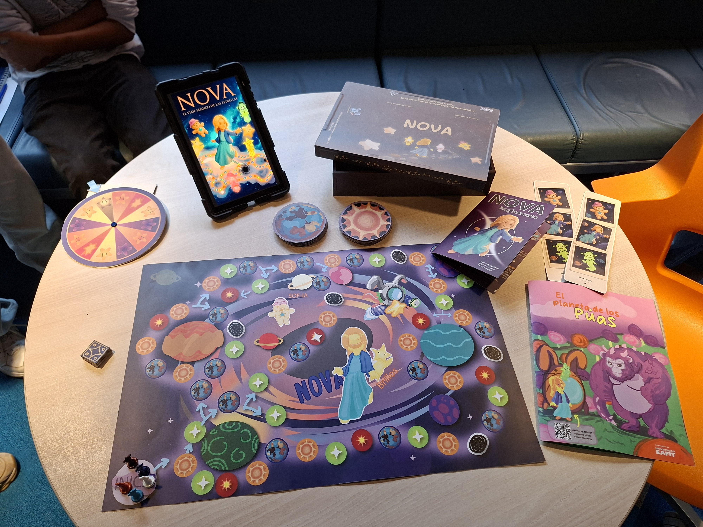
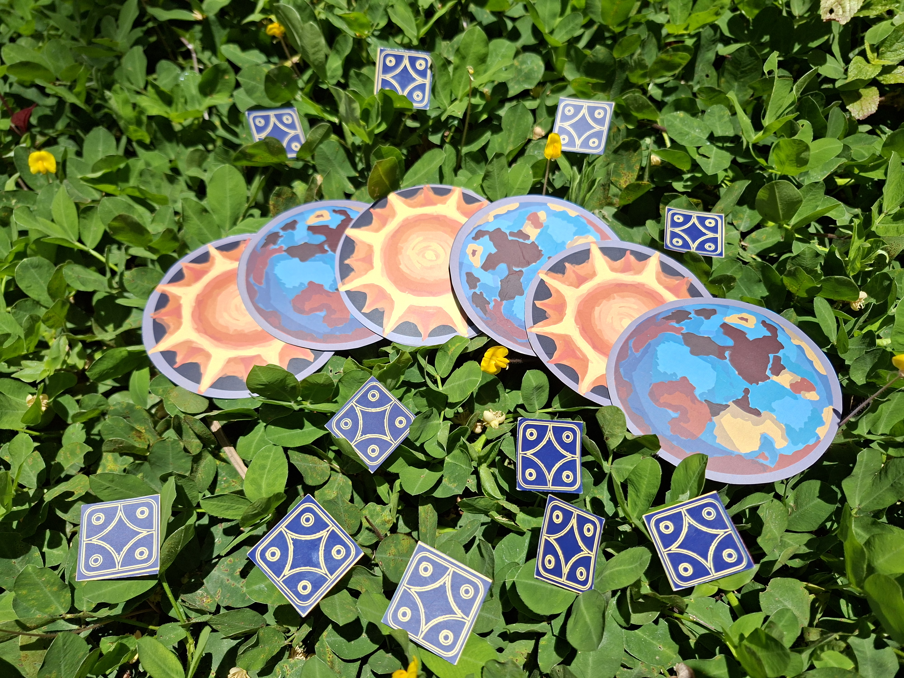
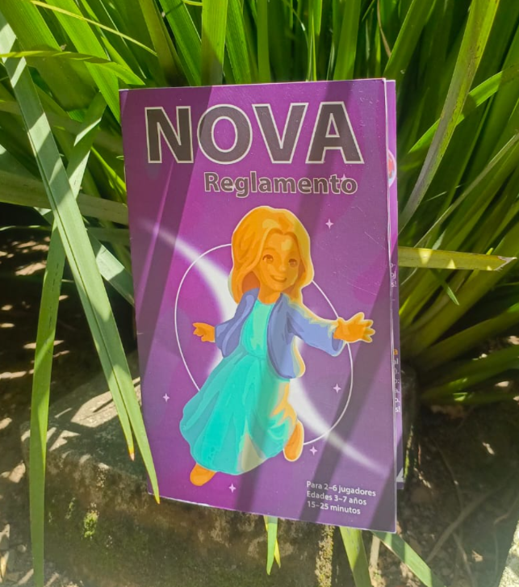
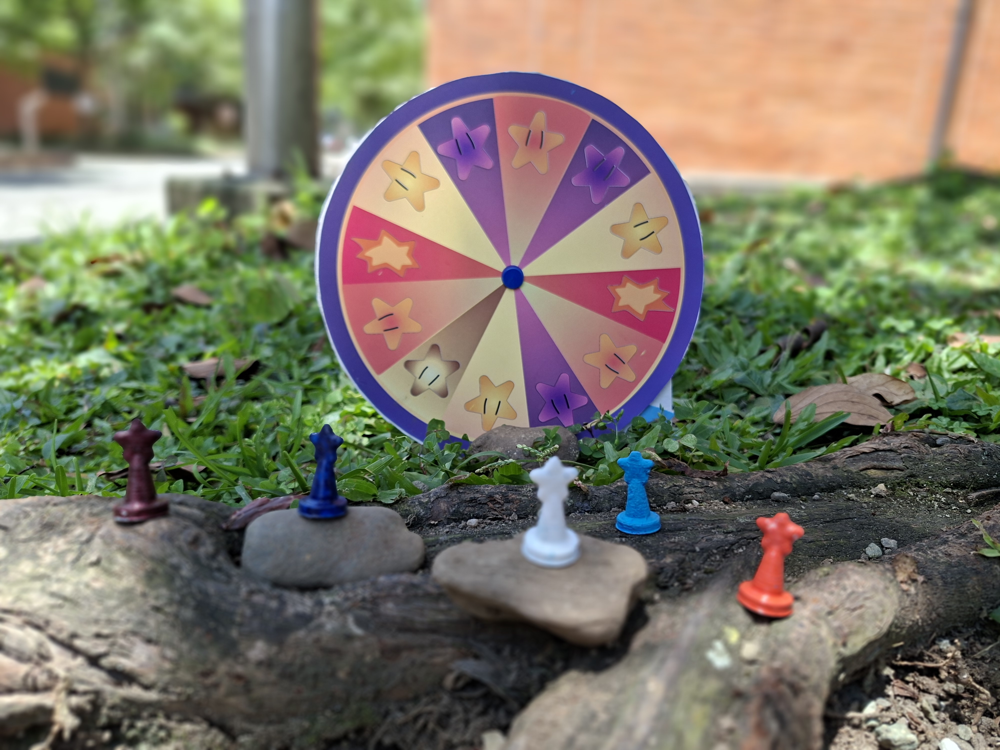

Vista general
Fotografía frontal de presentación del juego.
Juegos y experiencias
Aquí podrás encontrar el Video Juego de Nova "Nova, el viaje de las estrellas"
y tambien el juego de mesa de Nova
Este contenedor está preparado para recibir el build exportado desde Unity tengan pacienciaaaa estoy cooking
Espacio de carga Unity WebGL
Jero reemplazara este bloque por los archivos exportados del build.
Sección pensada para mostrar caja, mapa, cartas y reglas del Juego fisico.

Fotografía frontal de presentación del juego.

Tablero, superficie principal de juego!

Conjunto de cartas estrellas, cometas y asteroides.

Instrucciones, manual de juego.

Ruleta del juego y fichas con forma de brillos.